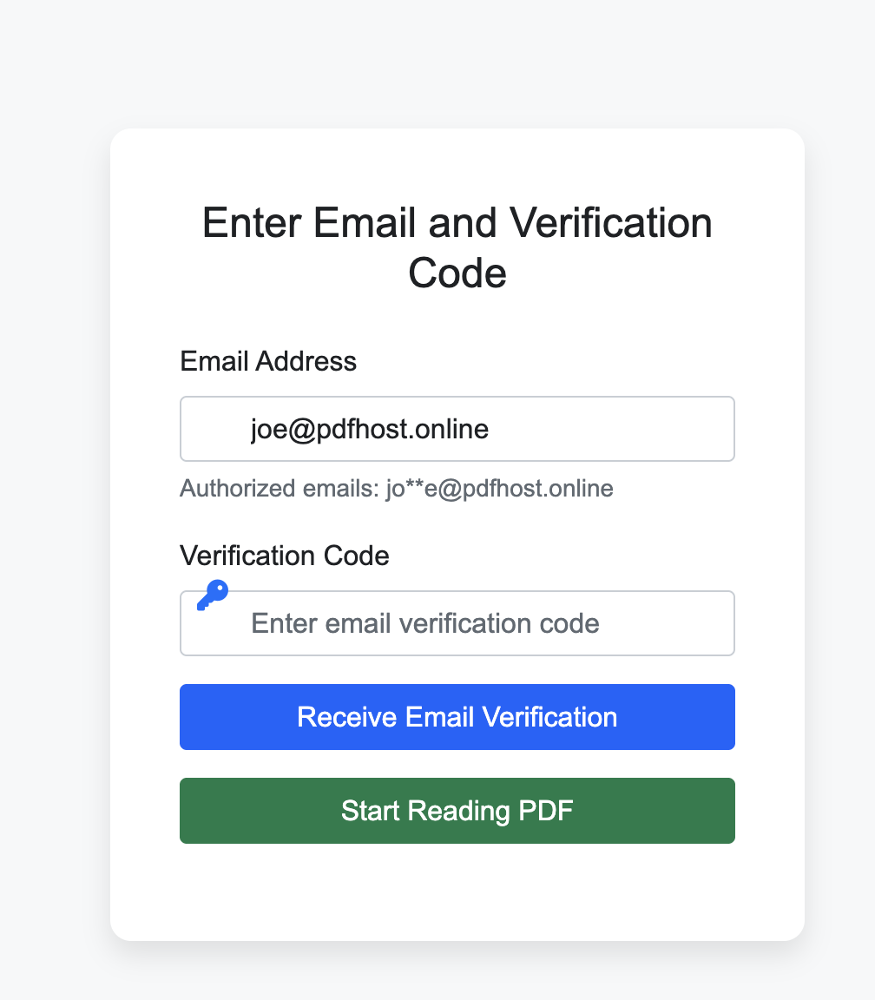

MaiPDF Advanced User Manual: Master PDF Tracking & Analytics
üìã Table of Contents

üöÄ Introduction to MaiPDF
What is MaiPDF?
MaiPDF is a professional-grade PDF document intelligence platform that transforms static documents into trackable, secure, and analytically rich assets. Key capabilities include:
- Real-time visitor tracking with IP geolocation
- Advanced security controls and access management
- Comprehensive analytics and reporting
- Dynamic watermarking and document protection
- Multi-platform sharing and distribution
✅ Who Should Use This Manual?
- Business professionals managing confidential documents
- Marketing teams tracking content engagement
- Legal professionals monitoring document access
- Educators distributing course materials
- Enterprise users requiring document intelligence
üìù Getting Started
Initial Platform Setup
Before diving into advanced features, ensure your MaiPDF environment is properly configured:
- Account verification and profile completion
- Security settings and two-factor authentication
- Workspace organization and team management
- API keys generation (for enterprise users)
üì§ Advanced Upload Process
Document Upload Interface
MaiPDF provides multiple upload methods optimized for different use cases:

Upload Methods:
- Drag & Drop - Quick single or batch uploads
- File Browser - Traditional file selection
- URL Import - Direct import from web URLs
- API Upload - Programmatic bulk processing
Document Processing Options
Configure processing parameters during upload:
- OCR text extraction for searchability
- Automatic metadata extraction
- Content analysis and categorization
- Initial security classification
⚠️ File Requirements
- Supported formats: PDF (all versions)
- Maximum file size: 100MB per document
- Batch limits: 50 files per upload session
- Security: All uploads are encrypted in transit
⚙️ Advanced Settings Configuration
Security Level Configuration
MaiPDF offers granular security controls for different document sensitivity levels:

Security Levels:
- Public - Open access with basic tracking
- Restricted - Email verification required
- Confidential - Multi-factor authentication
- Top Secret - Advanced encryption + time limits
Access Control Management
Configure who can access your documents and under what conditions:
Access Control Options:
- Email whitelist/blacklist management
- Domain-based access restrictions
- Geographic access limitations
- Time-based access windows
- Device-specific permissions
Email Verification System
Implement email-based access control for enhanced security:
Verification Features:
- One-time access codes
- Temporary access links
- Email domain validation
- Access attempt notifications
üîó Advanced Link Generation
Smart Link Creation
Generate intelligent tracking links with customizable parameters:

Link Customization Options:
- Custom URL slugs for branding
- UTM parameter integration
- Expiration date settings
- Access limit configurations
- Redirect behavior customization
QR Code Advanced Features
Beyond basic QR generation, MaiPDF offers:
- Custom QR code styling and branding
- High-resolution export for print materials
- Batch QR code generation
- QR code analytics and scan tracking
üìä Comprehensive Analytics Dashboard
Real-time Access Monitoring
Monitor document access in real-time with detailed visitor insights:

Analytics Data Points:
- Visitor Intelligence: IP addresses, geographic locations, ISP information
- Device Analytics: Browser types, operating systems, screen resolutions
- Behavioral Data: Time spent, pages viewed, scroll patterns
- Engagement Metrics: Download attempts, sharing activities, return visits
Advanced Reporting Features
Generate comprehensive reports for business intelligence:
Report Types:
- Executive Summary: High-level engagement overview
- Detailed Access Logs: Complete visitor activity records
- Geographic Analysis: Location-based access patterns
- Time Series Analysis: Access trends over time
- Comparative Reports: Multi-document performance comparison
Export and Integration Options
- CSV/Excel export for external analysis
- PDF report generation
- API data feeds for BI tools
- Real-time webhook notifications
- Google Analytics integration
üîß Advanced Features
Dynamic Watermarking System
Implement sophisticated watermarking for document protection and tracking:

Watermark Capabilities:
- Personalized Watermarks: Unique identifiers per viewer
- Invisible Watermarks: Hidden tracking codes
- Time-stamped Watermarks: Access time embedded
- Location-based Watermarks: Geographic information included
Document Settings Management
Modify document settings even after distribution:

Dynamic Configuration:
- Real-time permission updates
- Access revocation capabilities
- Expiration date modifications
- Security level adjustments
Multi-platform Distribution
Optimize document sharing across different platforms:

üõ°Ô∏è Enterprise Security Management
Access Control Mechanisms
Implement enterprise-grade access controls:
Control Options:
- View-Only Mode: Prevent downloads and printing
- Time-Limited Access: Automatic expiration
- IP Restrictions: Geographic or network-based limits
- Device Binding: Restrict access to specific devices
Watermark Information Tracking
Advanced watermark management and forensic capabilities:

Forensic Features:
- Watermark code reverse lookup
- Document authenticity verification
- Access trail reconstruction
- Leak source identification
üîí Security Best Practices
- Regularly audit access permissions
- Implement least-privilege access principles
- Monitor for unusual access patterns
- Maintain secure backup procedures
- Comply with industry regulations (GDPR, HIPAA, etc.)
üîå API Integration Guide
RESTful API Overview
MaiPDF provides comprehensive API access for enterprise integration:
Available Endpoints:
- Document Management: Upload, update, delete documents
- Analytics: Retrieve access data and reports
- Security: Manage permissions and settings
- Webhooks: Real-time event notifications
Webhook Configuration
Set up real-time notifications for document events:
üîß Advanced Troubleshooting
Common Issues and Solutions
üì§ Upload Issues
Problem: Large file upload failures
Solution: Enable chunked upload mode or compress PDF before upload
üìä Analytics Discrepancies
Problem: Missing or delayed analytics data
Solution: Check timezone settings and allow 5-10 minutes for data processing
üîí Access Control Problems
Problem: Authorized users cannot access documents
Solution: Verify email whitelist settings and check spam folders
üåê Geographic Restrictions
Problem: Users in certain regions cannot access documents
Solution: Review IP-based restrictions and VPN detection settings
Performance Optimization
- Document Size: Optimize PDFs before upload for faster loading
- Caching: Enable CDN caching for global distribution
- Analytics: Use batch API calls for large-scale analytics retrieval
- Security: Balance security settings with user experience
- 24/7 technical support for enterprise users
- Comprehensive API documentation
- Video tutorials and webinars
- Community forums and knowledge base
üéØ Advanced Use Cases
Enterprise Scenarios
- Legal Firms: Track document access during litigation
- Financial Services: Monitor sensitive report distribution
- Healthcare: Secure patient information sharing
- Education: Analyze course material engagement
- Marketing: Measure content marketing effectiveness
üöÄ Mastering MaiPDF
This advanced manual covers the comprehensive capabilities of MaiPDF for professional document intelligence. By implementing these advanced features and best practices, you can transform your PDF documents into powerful business intelligence assets while maintaining the highest levels of security and compliance.
Ready to implement advanced PDF tracking in your organization? Start with MaiPDF today!